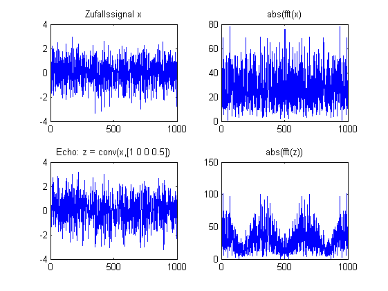

% faltungstheorem.m % Skript SMU_02 % % B.Wir 20.9.02 close all clear clc werte=1000; xk=randn(1,werte); yk=[1 0 0 0.5]; zk=conv(xk,yk); zk=zk(1:werte); % oder auch so % zk=filter(1,yk,xk); figure(1) subplot(2,2,1) plot(xk) title('Zufallssignal x') subplot(2,2,2) plot(abs(fft(xk))) title('abs(fft(x)') subplot(2,2,3) plot(zk) title('Echo: z = conv(x,[1 0 0 0.5])') subplot(2,2,4) plot(abs(fft(zk))) title('abs(fft(z))')